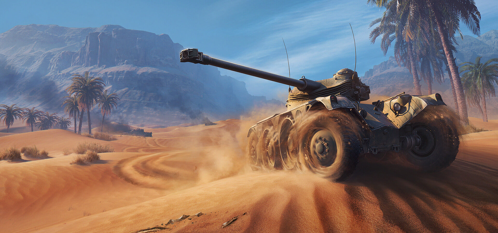
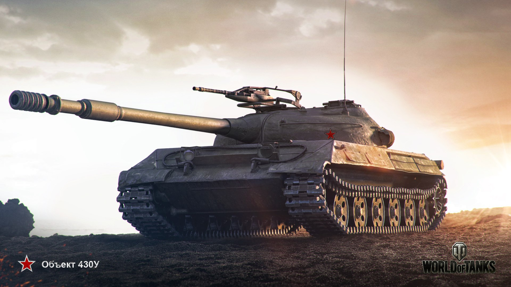
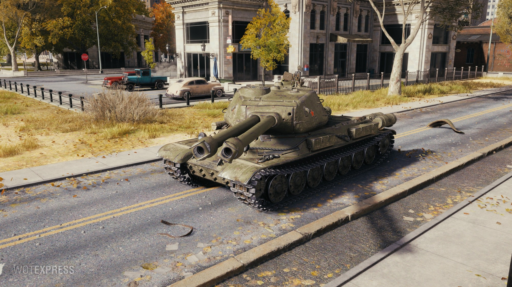
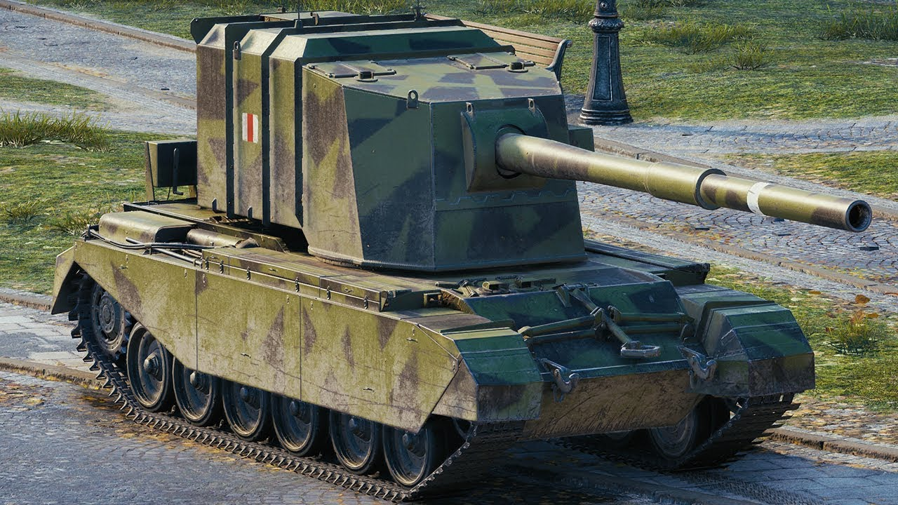
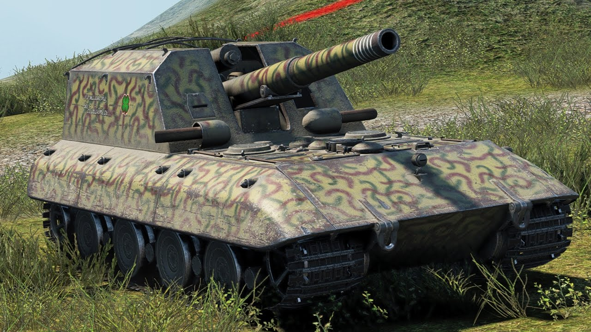

Taktická online tanková střílečka.
↓ Ve hře World of Tanks je 5 druhů tanků: Lehké, Střední, Těžké, Stíhače, Dělostřelectva. ↓
Nejrychlejší, nejvíce dynamická, hbitá, ale nejzranitelnější třída vozidel ve hře. Lehké tanky jsou rození průzkumníci a jejich hlavní úlohou je odhalovat nepřátelské pozice a přežít co nejdéle.
Jako všestranné stroje mají střední tanky slušnou pohyblivost doplněnou dobrým pancířem a vytrvalostí. Jejich hlavní výhodou je práce ve skupinách.
Obří, výkonné a těžce obrněné těžké tanky mnohou buď vést útok k prolomení nepřátelských linií, nebo zadržovat postupující hrozby. Je-li vaším stylem hry čistá síla, vyberte si těžký tank.
Odstřelovači z dálky s ničivou palebnou silou, kteří loví vše, co odhalí spojenečtí průzkumníci. Bojový plán stíhače tanků spočívá v obsazení výhodné pozice a palbě z dálky, aniž by ho nepřítel viděl.
Podpůrná třída a nejméně pohyblivá vozidla. Dělostřelectvo využívá RTS styl „pohledu z ptačí perspektivy“, ničí pásy nepřátel a pálí ochromující granáty, jež dočasné poškozují posádku a moduly tanku.
Zde se nachází rozpis velmocí a počty různých typů tanků ve velmocech.
| Země | Lehké tanky | Střední tanky | Těžké tanky | Stíhače | Dělostřelectva |
|---|---|---|---|---|---|
| Německo | 26 | 30 | 22 | 26 | 11 |
| SSSR | 26 | 34 | 35 | 21 | 10 |
| USA | 19 | 25 | 17 | 20 | 11 |
| Francie | 22 | 11 | 14 | 13 | 10 |
| Velká británie | 12 | 23 | 12 | 19 | 10 |
| Čína | 12 | 11 | 9 | 10 | 0 |
| Japonsko | 5 | 12 | 9 | 0 | 0 |
| Československo | 3 | 9 | 4 | 0 | 0 |
| Polsko | 5 | 9 | 5 | 0 | 0 |
| Švédsko | 4 | 10 | 4 | 10 | 0 |
| Itálie | 2 | 10 | 0 | 0 | 0 |